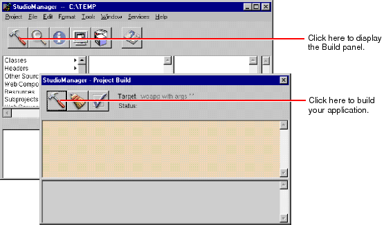

Creating a Java Client WebObjects Application
You build a Java Client project using Project Builder.
If there are any coding or linking errors the Project Build panel displays them; click an error message in the upper part of the panel to go to the site of the error in the code editor.
Related Concepts: Debugging Java Client WebObjects Applications
© 1999 Apple Computer, Inc.